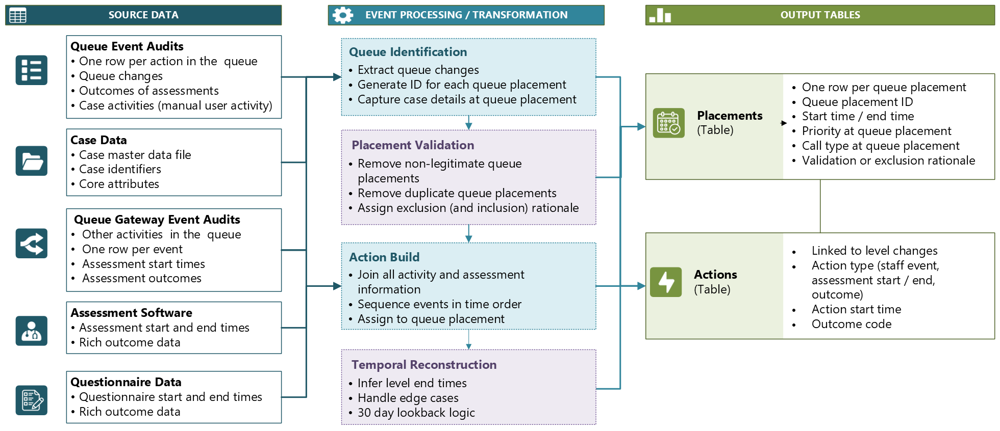

An analytical structure was required to better understand activity in the queues in the case management system. Cases could be presented to multiple queues, dealt with by multiple teams, and progress with or without interaction and outcomes. These activities were urgently required for performance management and case progress reports, as well as being important to subsequent investigations.
Queue Activity

What I Did
- Created a stable analytical entity to track each queue or team placement per case
- Introduced validation logic to classify each placement and preserve the inclusion or exclusion rationale
- Sequenced activity from cases, assessment software, questionnaires and staff-generated events against the active placement
- Reconstructed placement start and end times from audit events where the source system held no continuous episode
- Engineered endpoint logic for time-to-assessment KPIs, handling missing workflow markers and operational edge cases
Data Engineering Process
The case management system recorded queue events as they happened: team assignments, assessment activity, team actions and outcomes, but not continuous episodes. A single case could generate dozens of audit records across multiple systems without any persistent identifier representing the placement or actions within a team. The operational questions required that structure.
Firstly, I created a stable analytical entity that the source system did not provide, generating an ID for each placement into a queue or team and capturing the case ID, team name, placement sequence, timestamp, priority, and category at the point of placement. This transformed isolated audit records into something that could be queried as a continuous queue episode.
Not all team placements in the audit stream represented genuine activity. System housekeeping processes generated transient placements, duplicate transitions, timeout removals and technical routing artefacts which needed excluding to avoid misrepresenting durations and case progress. I introduced validation logic to classify each placement and retained the inclusion or exclusion rationale within the output table, rather than applying opaque filters inside individual reports. This meant operational users could trust duration calculations, review excluded events and investigate unusual behaviour without relying on logic hidden downstream.
Once validated team placements existed, activity from across the source systems, including cases, assessment software, questionnaire activity and staff-generated events, could be attributed to the correct placement episode. The key challenge was temporal: actions frequently occurred after multiple placement changes, with simultaneous priority transitions, and across several systems simultaneously. The attribution logic sequenced all events chronologically and assigned each action to the active validated level at that point in time, producing a record of what happened within a placement rather than simply what happened to an incident overall.
The most complex stage was reconstructing start and end times for each queue level. The source systems did not store episode durations, so end times had to be inferred from subsequent placements, removals, outcomes and lookback logic. Several edge cases required explicit handling: cases that left and returned to the queue, multiple assessments on the same incident, and missing assessment or staff actions where queue gateway activity had to be treated as the triage start point.
This temporal reconstruction logic became particularly important for the time-to-start-assessment KPIs. The KPIs required identifying the relevant queue placement, then finding the first meaningful clinical activity after it. I engineered an endpoint hierarchy in association with operational teams, consisting of a staff action event, an assessment start or a recorded outcome, to prevent triage records being lost in cases where markers could be missing.
I validated the data extensively using comparisons against the original audit event table, with the inclusion and exclusion rationale providing evidence of accuracy, real-time analysis of clinician activity and comparisons against other limited in-built reports.
Output Model
The engineering process produced two analytical tables:
- An episode-based row per validated queue placement, with placement start and end timestamps, priority at placement, validation status and rationale for inclusion or exclusion
- A row per operational action occurring within a validated placement, linked back to the relevant placement ID and recording the action source, type and timestamp
Downstream Power BI reporting was built against these tables rather than against the raw audit sources directly. This centralised the validation rules, temporal calculations and KPI definitions in the SQL transformation layer, avoiding duplication across reports and ensuring that any change to operational logic could be made in one place.
An anonymised example of the SQL scripts is available here.
Outcome
The output was a validated, queryable queue episode model with time-to-assessment KPIs made calculable for the first time, supported by a defined endpoint hierarchy to handle incomplete workflow marker usage. Validation rationale persisted within the model rather than being applied dynamically, improving auditability and reproducibility. The model was applied to several outputs and reports including case flow, queue monitoring and KPI reports.